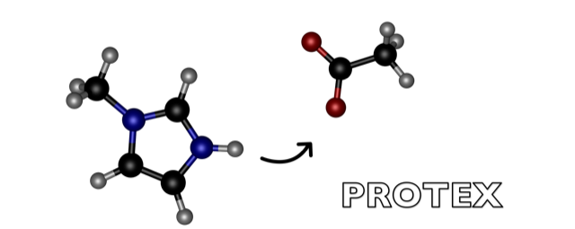

Contents:
Getting Started
Quick Start Guide
Detailed Example
Use Cases
API Documentation
protex.system
protex.update
protex.testsystems
protex.testsystems.generate_complete_system
protex.testsystems.generate_h2o_system
protex.testsystems.generate_hpts_meoh_lj04_system
protex.testsystems.generate_hpts_meoh_system
protex.testsystems.generate_hpts_system
protex.testsystems.generate_im1h_oac_dummy_system
protex.testsystems.generate_im1h_oac_system
protex.testsystems.generate_single_hpts_meoh_system
protex.testsystems.generate_single_im1h_oac_system
protex.testsystems.generate_small_box
protex.testsystems.generate_tfa_system
protex.testsystems.load_charmm_files
protex.testsystems.setup_simulation
protex.testsystems.setup_system
setup_system()
protex.reporter
protex.residue
protex
API Documentation
protex.testsystems
protex.testsystems.setup_system
View page source
protex.testsystems.setup_system
protex.testsystems.
setup_system
(
psf
:
CharmmPsfFile
,
params
:
CharmmParameterSet
,
constraints
=
None
,
dummy_atom_type
:
str
=
'DUMH'
,
cutoff
:
float
=
11.0
,
switch
:
float
=
10.0
)
[source]